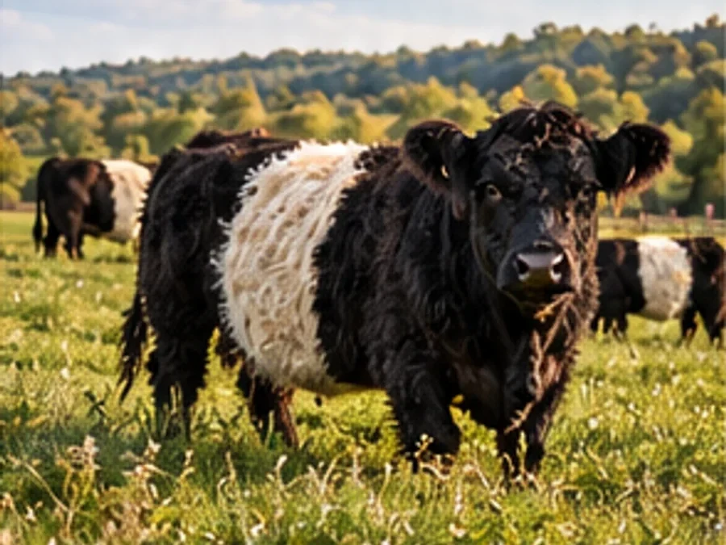
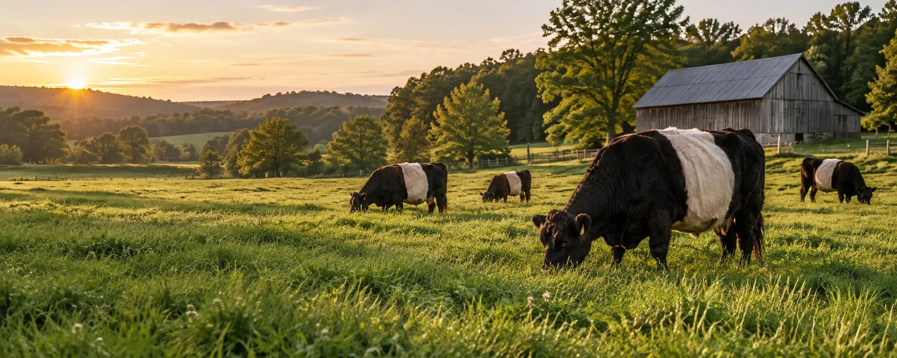
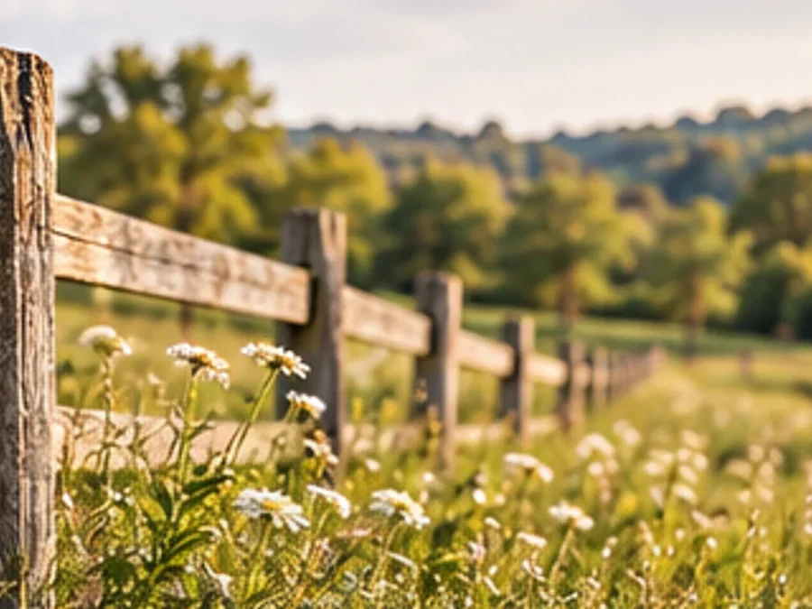
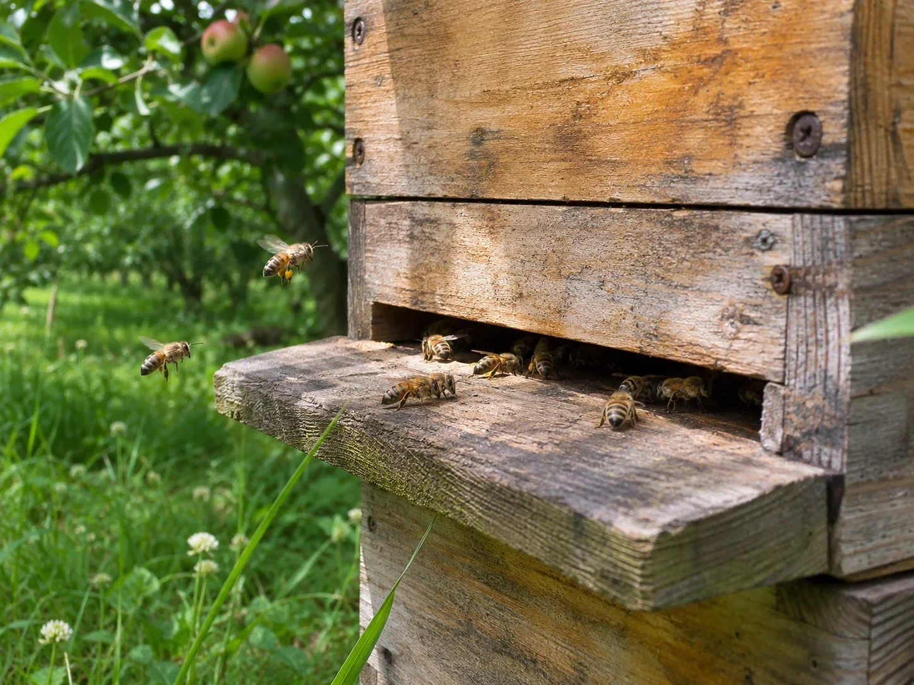

Our Cattle
Discover our heritage Belted Galloway cattle and grass-based farming.

A family farm in the rolling hills of the countryside.
Our roots
This demonstration family farm brings fresh food and a love of the countryside to its community.


Discover our heritage Belted Galloway cattle and grass-based farming.

Our apiary is part of the farm. Explore our honey and seasonal preserves.

A place to discover eggs, meats and pantry favourites close to home.